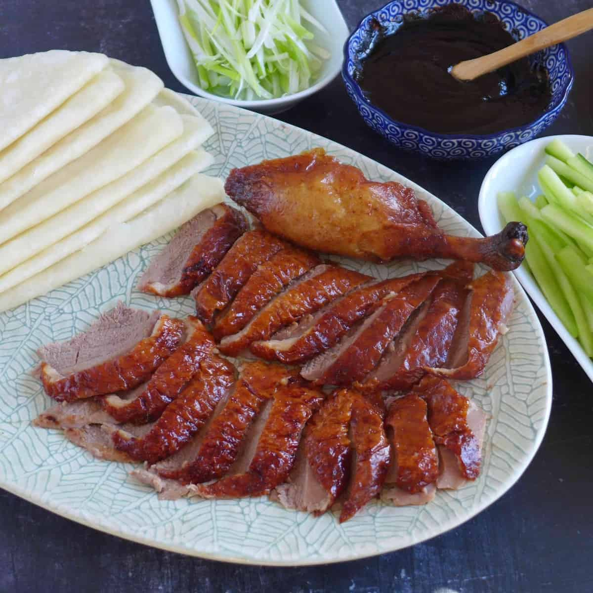
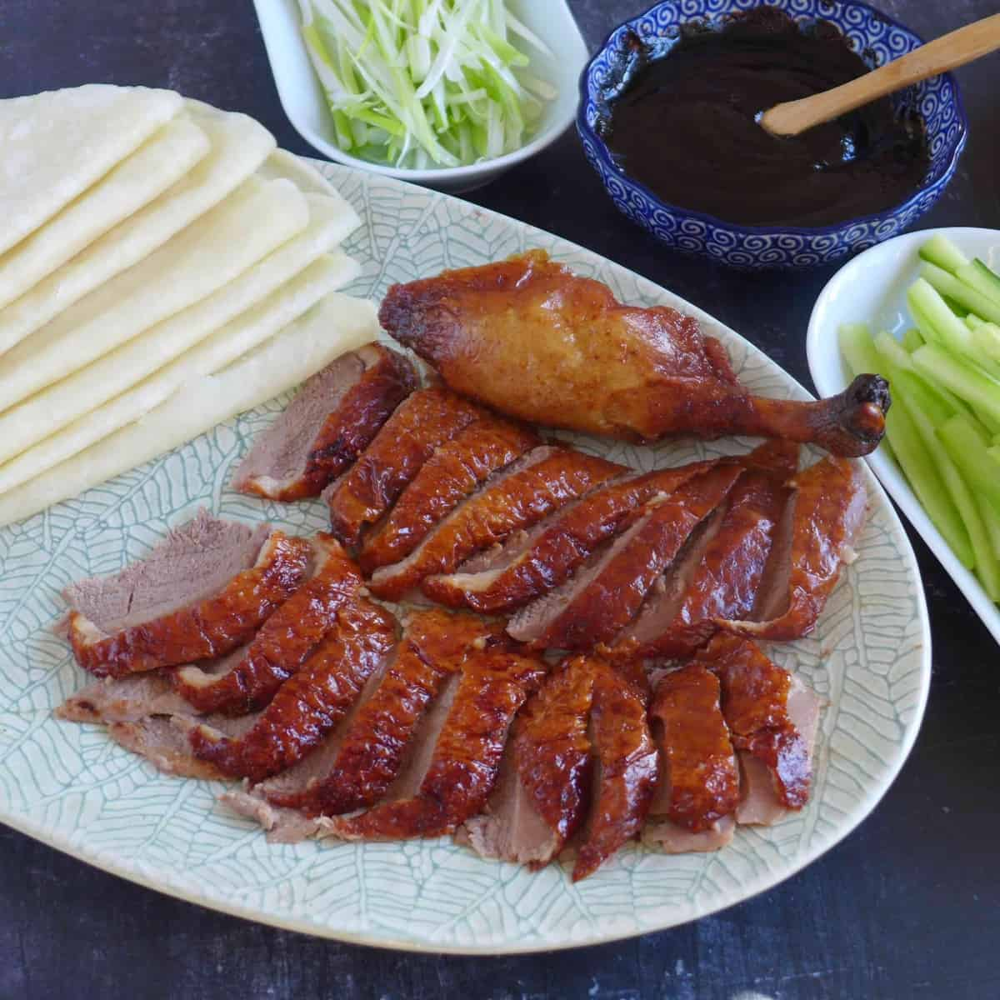
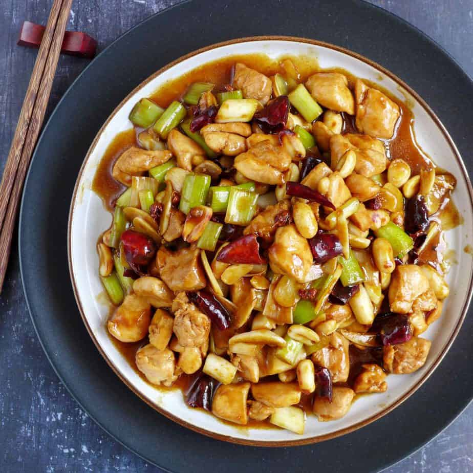
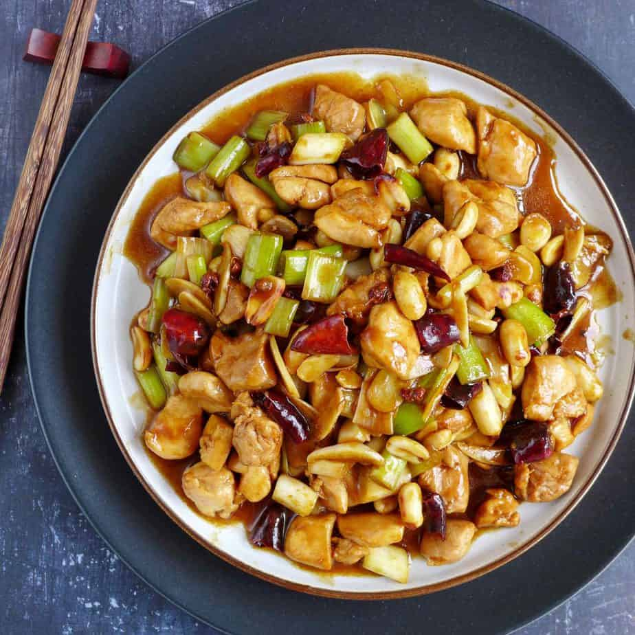

China Major Ethnic Groups
The History Of Ethnicity In China
The Han community for years portrayed prosperity and grew both in numbers and geographical boundaries. Within two millenniums, the ethnic group had absorbed many minority groups in China to become the dominant ethnic group. This sinicization reduced the many different states of China facilitating unity in imperial China. The Han inability to endorse and respect the different cultures and religion of other ethnic groups promoted the need for independence among the minorities conceptualizing a cultural divide. However, the imperial rule of the Han in their locality lands flourished until the communists took power in 1949.
Different ethnic group had a right to operate freely and independently of the federal government and can also disaffiliate. After years of influence, China finally gave into communalism. This change in governance saw the end of the sinofication of the non-Han Chinese people. The government of China also accepted, the Muslims in the region as Chinese and endorsed Islam as a religion constituting of many separate ethnic groups.
The Han Chinese, 91.6%
This ethnic group is the largest community not only in China but also in the whole world. With a population of about 1220.84 million, they live primarily in Yellow River, Pearl River, Yangtze River and Songliao Plain. The Han people majorly speak Mandarin and practice Taoism, Buddhism, and Confucianism.
Zhuang, 1.27%
The Zhuang community group is the second largest community in the country with a population of 16,926,381. The majority occupy the Guangxi Zhuang Autonomous Region and the province of Yunnan. They have their own language, but a majority speaks Chinese dialects. Their culture and way of life are similar to the Han, and this has facilitated respect and unity among them.
Hui Minority, 0.79%
This ethnic group practices the Islamic religion as they are descendants of the Turks but do not speak the dialect. Instead, they speak Mandarin Chinese just like the Uighurs.Today, they live in the Ningxia Hui Autonomous Region in the northwest of China, and the community is concentrated in Gansu, Hebei, Henan, Shandong, and Xinjiang provinces. The ethnic group shares customs and language with the Han people. They are approximately 10,586,087 people.
Manchu, 0.78%
The ethnic group has a population of about 10,387,958 concentrated in the provinces of Liaoning, Heilongjiang, and Jilin. The people practice Buddhism and believe in Shamanism.
China Foods
Peking Roasted Duck
Peking duck (北京烤鸭 Běijīng kǎoyā) is a famous dish from Beijing, enjoying world fame, and considered as one of China national dishes. Peking duck is savored for its thin and crispy skin. Sliced Peking duck is often eaten with pancakes, sweet bean sauce, or soy sauce with mashed garlic. It is a must-taste dish in Beijing!
As “the first dish to taste in China”, Beijing Roast Duck used to be a royal dish in medieval China. It has been a “national dish of diplomacy” since the 1970s, when it was first used for the reception of foreign guests by Premier Zhou Enlai (the first Premier of the People's Republic of China). It is highly praised by heads of state, government officials, and domestic and foreign tourists.


 

Kung Pao Chicken
Kung Pao Chicken (宫保鸡丁 gōngbào jīdīng) is a famous Sichuan-style specialty, popular with both Chinese and foreigners. The major ingredients are diced chicken, dried chili, cucumber, and fried peanuts (or cashews). People (Chinese takeaways) in Western countries have created a Western-style kung pao chicken, for which the diced chicken is covered with cornstarch, and vegetables, sweet and sour sauce, and mashed garlic are added.


 


Sweet and Sour Pork
Sweet and sour pork (糖醋里脊 tángcù lǐjǐ) has a bright orange-red color, and a delicious sweet and sour taste. At the very beginning there was only sweet and sour pork, but to meet demands, there have been some developments on this dish. Now, the pork can be substituted with other ingredients like chicken, beef, or pork ribs.


Hot Pot
Hot pot, or hotpot (火锅 huǒguō), is one of the most popular dishes in China, especially in Sichuan Province or Chongqing. People cook in and eat from a simmering pot of soup stock (broth) on a gas/induction hob in the middle of the dining table with foodstuffs and condiments around the pot. People can add and cook whatever they like in the broth. The secret of whether a hot pot is good or not lies in the broth, which all the meat slices and vegetables take their flavor from.
Chinese people are very fond of hot pot. In the past hot pot used to be favored only in winter, but nowadays hot pot has been appearing on tables all year round. It is a great way to socialize with friends and relatives. People gather around the pot to eat while chatting, eating, drinking, and having fun.


Chinese Dressings
Cheongsam (Qipao)
Cheongsam (Chinese: 长衫; pinyin: chángshān; Wade–Giles: ch'ang-shan), also called qipao (Chinese: 旗袍; pinyin: qípáo; Wade–Giles: ch'i-p'ao) is a body-hugging dress with a high neck, originated from the Manchu-ruled Qing dynasty (1644-1911). It is characterized by its figure-hugging cut and unique design, including an asymmetrical closure with a distinctive collar. The dress can be made from various fabrics, including silk, satin, and brocade, and is often adorned with intricate embroidery and decorative buttons. Traditionally, the cheongsam is worn with a long skirt, and the qipao is often worn with a matching jacket or coat. The dress became popular in the 1920s and 1930s and remains a symbol of Chinese fashion and elegance. Today, it is commonly worn during special occasions such as weddings and formal events.
.jpg)
 2.jpg)
 1.webp)
Hanfu
Hanfu (Chinese: 汉服; pinyin: hànfú) is the traditional clothing of the Han Chinese people, with a history of over 4,000 years. The term "Hanfu" encompasses a range of historical clothing styles, characterized by their flowing lines, wide sleeves, and use of layers. The garment consists of a combination of a tunic or robe and a skirt or trousers, often with intricate designs and embroidery. The Hanfu's design is rooted in the Confucian principles of modesty and propriety. Although the popularity of Hanfu waned during the Ming and Qing dynasties, it has experienced a revival in recent years as people seek to reconnect with traditional Chinese culture.
Chinese Greetings
Common Greetings
In China, greetings are an essential part of daily interactions. Here are some common Chinese greetings and their meanings:
- 你好 (Nǐ hǎo) - Hello
- 早上好 (Zǎoshang hǎo) - Good morning
- 下午好 (Xiàwǔ hǎo) - Good afternoon
- 晚上好 (Wǎnshàng hǎo) - Good evening
- 再见 (Zàijiàn) - Goodbye
- 谢谢 (Xièxiè) - Thank you
- 对不起 (Duìbùqǐ) - Sorry
- 请问 (Qǐngwèn) - Excuse me (to ask a question)
Traditional Chinese New Year Greetings
During the Chinese New Year, people use specific greetings to wish others well for the coming year. Some of these include:
- 新年快乐 (Xīnnián kuàilè) - Happy New Year
- 恭喜发财 (Gōngxǐ fācái) - Wishing you wealth and prosperity
- 万事如意 (Wànshì rúyì) - May all your wishes come true
- 身体健康 (Shēntǐ jiànkāng) - Wishing you good health